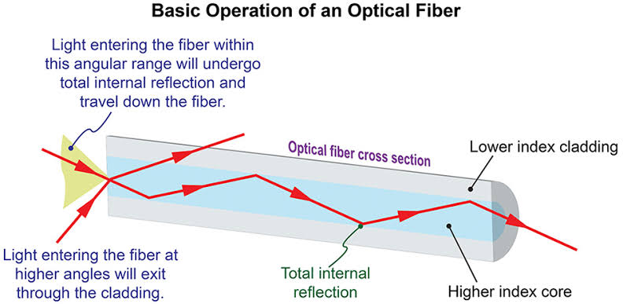
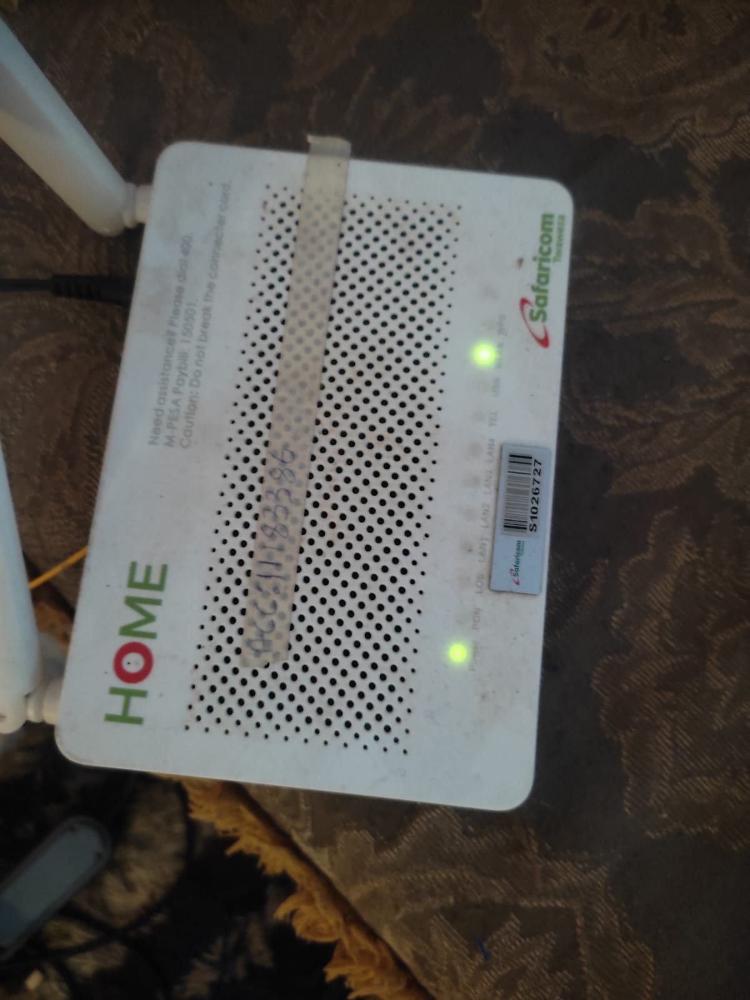
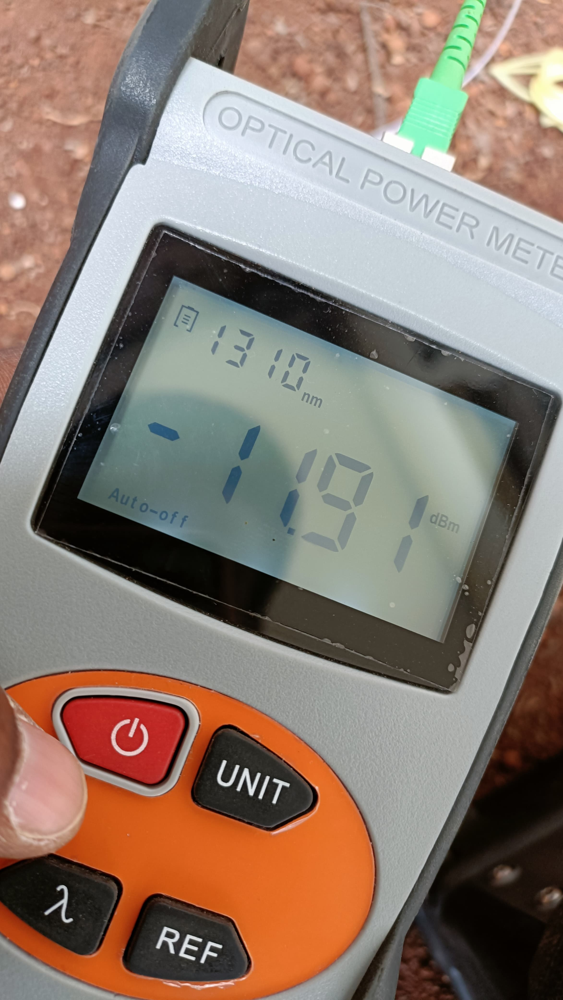
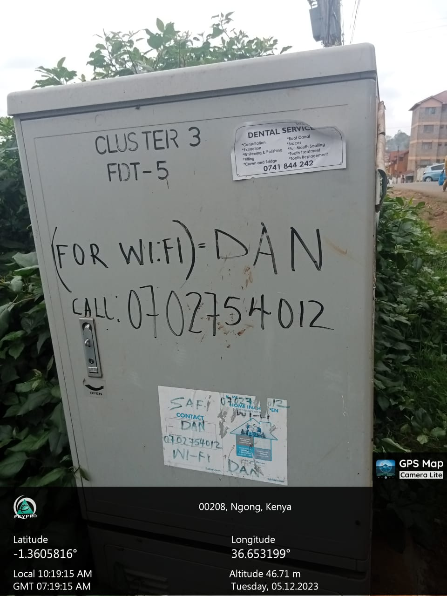
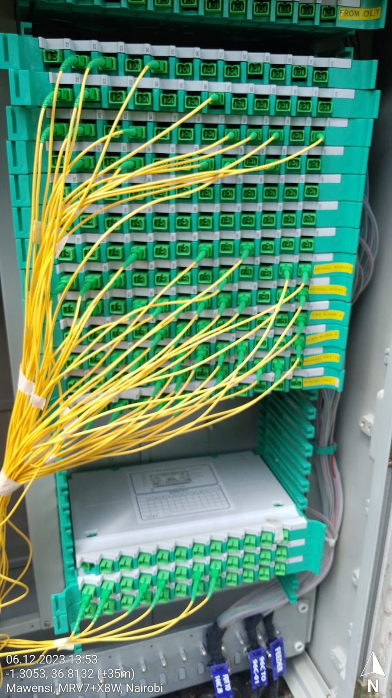
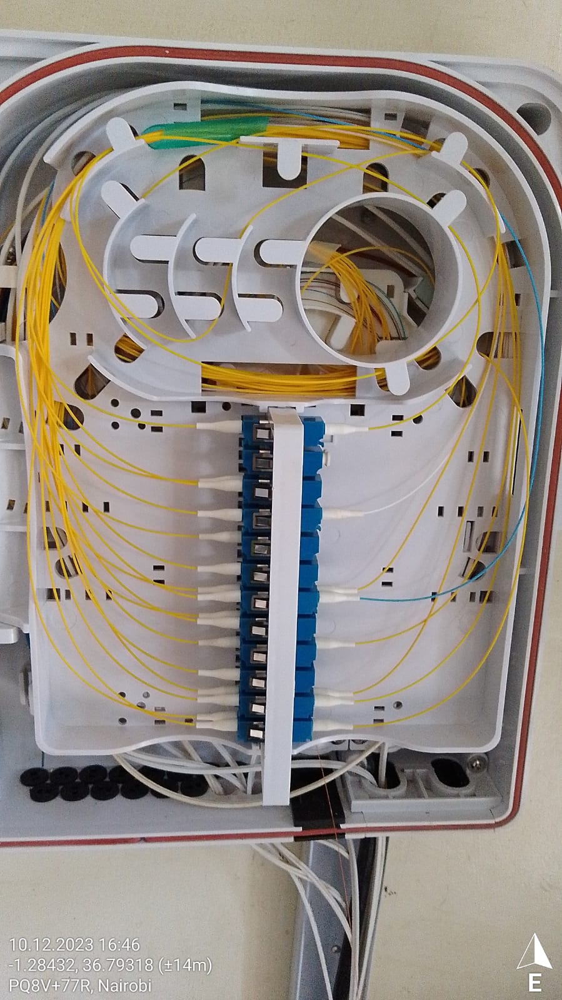

Fibre to the home is a term or a department that deals with connecting clients using optical fibre to their homes and thus able to access the internet.
Optical fibre refers to a waveguide that is made of two materials of different refractive indices which guide the light through it from the transmitter to the receiver i.e the router.

Router

The router receives the light signals from the fiber cable and decodes the data back to the electrical signals which are then converted to wireless signals using the antennas.
When the user is connected to the router wirelessly it converts the wireless data back to electrical signals and finally to the light signals which are then transmitted through the optical fiber to the ISP Network.
Therefore the router acts as a transreceiver ie both a transmitter and a receiver.
Most ftth network uses single mode fiber and mostly wavelength of about 1310nm close to the the far end of infrared region.Single mode is able to transmit data over long distances with minimal loss.

The FTTH Infrastructure
The ftth infrastructure starts from the head office where we have the main routers switches and access to the outside world connectivity.
Mobile Cell Tower
Then we got the Base Transmission station or mobile towers where we got the Optical Line Terminal(OLT).
From the OLT we have the SFP device which enable transmission of light signals over long-distance through fiber cable.
Fiber distribution terminal
This is commonly known as the cabinet and it serves as the distribution point and usually has a splitter which demodulates and modulates signals.
From the OLT the splitter at the cabinet acts as a demultiplexer for instance a 1:64 splitter has one input and 64 inputs.


Fiber Access terminal
This is the part where the drop optical fibre cables which run to the client's home is connected or terminated.
This provides the client with access to the ISP network .

At the clients' house we have the terminal box called the
access terminal box (ATB) where the drop cable is terminated and a patchcord used to connect the router.
Issues affecting your ftth connection
If you have an LOS light on your router this can be caused by one of the following issues.
- Fiber core is broken at the ATB
- Your patchcord is faulty or you mistakenly made it loose at the connector
- Your drop cable is kinked possibly in the house
- Your drop cable has the core broken at the fat and needs to be respliced.
- The connector either at the fat or atb is faulty or dusty
- You were unpatched at the cabinet mistakenly or intentionally.
How the issues are resolved
After you have raised a ticket and the technicians have come they first measure the power levels.If the levels are outside the required range they then use the laser pen to find the fault.
They check how light is passing at the atb then proceed to the fat where they also measure the signal level.
If the problem isn't there they can proceed to the cabinet to check the splitter output or change the connectors or the fiber core.